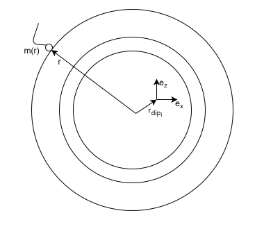
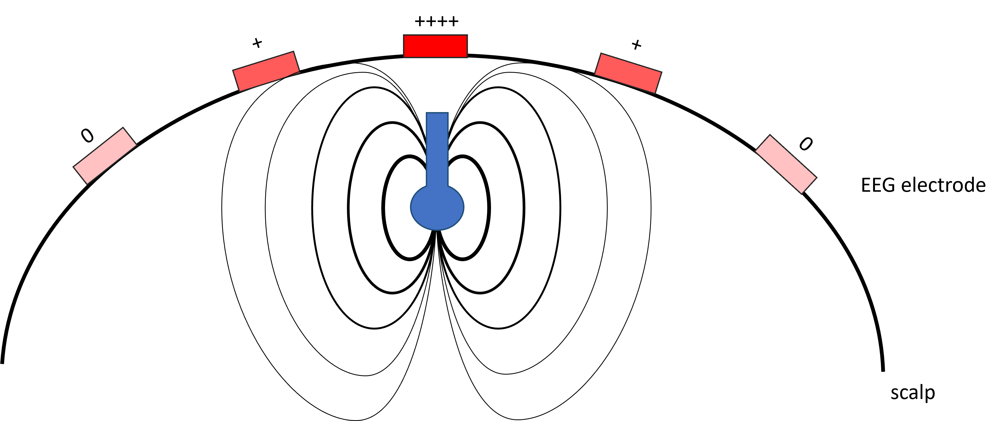
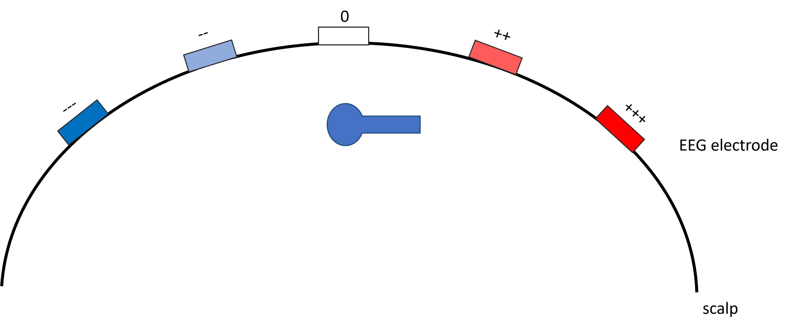

One of the holy grails of EEG analysis would be to determine where in the brain the signals that make up the EEG are generated. It is well established that the EEG does not reflect the activity of single neurons, but rather the combined electrical activity of spatially extended patches of simultaneously active cortical tissue with a minimal area in the order of several square centimeters. To go from these patches of simultaneous active cortex to EEG signals, we will use the terminology and mathematical notation described in (Grech et al., 2008)
Assumptions
In this module, we will make a few key assumptions to develop elegant mathematical models for the forward and inverse problems in EEG. These assumptions are:
There is no time delay between synchronised neuronal activity and the resulting EEG; any change in the neuronal signal is reflected instantaneously in the EEG.
Neuronal sources can be represented as mathematical dipoles, which will be explained in detail below.
The head consists of homogeneous tissue layers, typically with isotropic electrical conductivity.
Forward problem
To transform the electrical signals recorded on the EEG into the source space (i.e., to estimate where in the brain they originated), we first need to understand how brain activity generates signals measurable at the scalp.
This is known as the forward problem in EEG. The first step is to define how neural sources are represented. The best current approximation models each source as an electric dipole — a pair of equal and opposite charges separated by a very small distance. Because of this structure, a dipole has both a magnitude (strength) and a direction, and can therefore be represented as a vector.
This dipole model is based on the properties of pyramidal neurons, which are long, oriented cells in the cerebral cortex. When many of these neurons are active and aligned, their combined electrical fields produce measurable EEG signals. Thus, the dipole serves as a simplified but biologically grounded model of how neuronal populations contribute to scalp potentials.
In the diagram below, adapted from (Grech et al., 2008), a simplification of the forward problem is shown.

Diagram adapted from Grech et al., 2008.
A three-layer approximation of the head (scalp, skull, brain) is shown with a single dipole located at position
\( \mathbf{r}_{\text{dip}_i} \) from the origin. In this two-dimensional plane, any dipole orientation at that location can be decomposed into two orthogonal axes,
\( \mathbf{e}_{\text{x}} \) and \( \mathbf{e}_{\text{z}} \). For simplicity, one measurement electrode \( \mathbf{m}_{\text{r}} \) is drawn at radius \( \mathbf{r} \).
The source space can be represented in one of two main ways. In a volumetric model, dipoles oriented along the x, y, and z axes are placed at discrete points throughout the whole brain volume. Alternatively, sources can be restricted to the cortical surface, where dipoles are oriented perpendicular (normal) to the cortex. This approach reduces the number of parameters to estimate and reflects the organisation of cortical pyramidal neurons.
By solving the Poisson equation—using the tissues’ electrical conductivities, geometry, source locations, and EEG electrode positions as inputs—we can estimate how each dipole influences each electrode. Two examples of dipoles and their influence on the EEG electrodes are given below

The electric field and influence on EEG electrodes for a normal oriented dipole

The electric field and influence on EEG electrodes for a tangential oriented dipole
According to the principle of superposition, the EEG signal measured at electrode \( m \) at time \( t \) can be expressed as a linear combination of dipole contributions, each weighted by a gain factor \( g \).
All gain factors can be collected into an \( M \times N \) matrix, where \( M \) is the number of electrodes and \( N \) is the number of sources. Typically, \( M \ll N \), making the system underdetermined; in practice,
\( M \) ranges from roughly 20 to 256 electrodes, whereas \( N \) is on the order of several thousand potential sources.
$$
\mathbf{M} =
\begin{bmatrix}
m(\mathbf{r}_1) \\
\vdots \\
m(\mathbf{r}_N)
\end{bmatrix}
=
\begin{bmatrix}
g(\mathbf{r}_1, \mathbf{r}_{\text{dip}_1}) & \cdots & g(\mathbf{r}_1, \mathbf{r}_{\text{dip}_p}) \\
\vdots & \ddots & \vdots \\
g(\mathbf{r}_N, \mathbf{r}_{\text{dip}_1}) & \cdots & g(\mathbf{r}_N, \mathbf{r}_{\text{dip}_p})
\end{bmatrix}
\begin{bmatrix}
d_1 \mathbf{e}_1 \\
\vdots \\
d_p \mathbf{e}_p
\end{bmatrix}
$$
Or in compact notation, with added gaussian noise from the amplifying system \( n \sim \mathcal{N}(0,\sigma^{2}) \)
$$M = GD+n$$
Below is an interactive leadfield visualisation. Use the Brain Source slider to change the source location, adjust its orientation (X, Y, Z, or custom), and explore how these parameters shape the resulting EEG scalp topography. For the full page demo click here.
Electrical Source Imaging — Inverse Solutions
Short guide to dipole fitting, minimum-norm approaches and common regularised variants (LORETA/LAURA, dSPM, sLORETA).
Dipole fitting
Dipole fitting searches for the dipole (or set of dipoles) whose predicted scalp topography best matches the observed data. Each dipole has six parameters: three for spatial position \(r_i\) and three for the dipole moment \(D_i\). Because the leadfield depends nonlinearly on dipole position, the optimisation can be nonlinear.
Objective for a single dipole:
\[\min_{r_i,\,D_i} \; \| M - G(r_i) D_i \|_2^2\]
Typical dipole-fitting workflows alternate between grid-search (or global search) for location and linear estimation of the dipole moment at each candidate location, or use gradient-based nonlinear optimisation (e.g., Levenberg–Marquardt).
Distributed Source Model
Whereas dipole fitting explains the data using a few focal generators, distributed source models take the complementary approach of estimating activity at all possible source locations at once. Because the inverse problem is underdetermined or ill-posed (many candidate sources vs. relatively few sensors), the leadfield matrix \( G\) cannot be directly inverted. For a given scalp distribution \( M\), there are infinitely many source solutions \( D\). Choosing a type of inverse method is therefore equivalent to imposing a constraint that selects one solution from this solution set.
The Minimum Norm Estimate Solution
A common constraint is to choose the solution with minimal overall source power. This leads to the family of Minimum Norm Estimates (MNE).
The Tikhonov-regularised minimum-norm objective is
\[ \min_D \; \| M - G D \|_2^2 + \lambda \| D \|_2^2, \qquad \lambda>0, \]
whose stationary condition gives the familiar closed-form estimate
We often separate the linear operator (the inverse “filter”) from the data by writing
\[ \boxed{D_{\mathrm{MNE}} = W_{\mathrm{MNE}} \; M, \qquad W_{\mathrm{MNE}} = (G^\top G + \lambda I)^{-1} G^\top.} \]
Two practical observations about this form: (1) the operator \(W_{\mathrm{MNE}}\) does not depend on the data \(M\) and can therefore be precomputed; (2) the direct form above requires inverting an \(N×N\) matrix (number of sources), which may be computationally expensive.
The generalised MNE expresses prior knowledge about source amplitudes through a source covariance (or prior) matrix \(R\). With this prior the operator becomes
\[ \boxed{ D_{\mathrm{MNE}} = W_{\mathrm{MNE}} \; M \;=\; R\,G^\top \big( G\,R\,G^\top + \lambda I \big)^{-1} M }. \]
When the prior is the identity, \(R = I\), the generalised operator reduces to the usual MNE operator:
\[ R = I \quad\Rightarrow\quad W_{\mathrm{MNE}}^{(R)} = G^\top \big( G G^\top + \lambda I \big)^{-1}. \]
The advantage of the generalised form is twofold: (i) an informative source prior \(R\) (e.g., encoding expected variance, orientation constraints, or spatial covariances) is incorporated naturally; (ii) the computation typically involves inversion of an M×M matrix (number of sensors) rather than an N×N matrix when implemented via the latter expression, which is computationally preferable in typical EEG/MEG setups.
Inherently, this solution is biased towards shallower sources, since sources closer to the measurement electrodes require less amplitude to give a similar signal with respect to deeper sources. A common practical correction for depth bias is to include a diagonal depth-weighting matrix \(W_{\mathrm{MNE}}\) (not to be confused with the operator \(W\)). One way to incorporate depth weighting into the generalised framework is to absorb it into the source prior:
\[ R \leftarrow W_{\text{depth}}^{-2} \quad\text{(i.e., use a prior variance that compensates for smaller lead-field norms).} \]
Alternatively, the weighted Tikhonov objective
\[ \min_D \; \| M - G D \|_2^2 + \lambda \| W_{\text{depth}} D \|_2^2 \]
yields the equivalent explicit weighted solution
\[ \boxed{ D_{\mathrm{wMNE}} = (G^\top G + \lambda W_{\text{depth}}^\top W_{\text{depth}})^{-1} G^\top M } \]
or, using the generalised/prior viewpoint with \(R = (W_{\text{depth}}^\top W_{\text{depth}})^{-1}\),
\[ \boxed{ D_{\mathrm{wMNE}} = R\,G^\top \big( G\,R\,G^\top + \lambda I \big)^{-1} M }. \]
From a general point of view, any prior on the sources which can be summarised in an operator \(B\) as:
\[ \min_D \; \| M - G D \|_2^2 + \lambda \| BD \|_2^2 \]
yields the explicit solution
\[ \boxed{ W_{\mathrm{wMNE}} = (G^\top G + \lambda B^\top B )^{-1} G^\top} \]
or, using the generalised/prior viewpoint with \(R = (B^\top B)^{-1}\).
One classical prior is spatial smoothness.
LORETA and LAURA — MNE solution with spatial priors
LORETA and LAURA can be seen as MNE solutions where the regulariser encodes spatial priors.
LORETA uses a discrete Laplacian operator \(L\) (second-order neighborhood) that penalises rapid spatial changes. The objective is
\[\min_D \| M - G D \|_2^2 + \lambda \| LW_{\text{depth}} D \|_2^2\]
giving
\[\boxed{ W_{\mathrm{LORETA}} = (G^\top G + \lambda (LW_{\text{depth}})^\top LW_{\text{depth}})^{-1} G^\top}\]
or, using the generalised/prior viewpoint with \(R = ((LW_{\text{depth}})^\top LW_{\text{depth}})^{-1} = W_{\text{depth}}^\top L^\top L W_{\text{depth}}\)
This yields the smoothest possible solution.
LAURA replaces the Laplacian with a flexible, distance-weighted prior matrix (often derived from a local autoregressive model)
The choice of spatial prior controls smoothness scale and effective spatial resolution.
Noise-normalised methods: dSPM and sLORETA
To reduce the influence of noise and improve statistical interpretability, MNE-type estimates are often normalised by an estimate of the noise variance at each source voxel.
dSPM (dynamic statistical parametric mapping)
dSPM normalises the MNE estimate by the (estimated) standard deviation of the noise at each source:
Here \(C_n\) is the noise covariance matrix estimated from baseline or empty-room recordings. The result is a z-like map where each source value is scaled by its noise standard deviation.
sLORETA (standardized LORETA)
sLORETA applies a noise-standardisation to the LORETA estimator such that, under ideal conditions, the localisation bias is eliminated and the map has standardised units:
Both dSPM and sLORETA improve interpretability by accounting for the spatial variation in sensitivity and noise—but their theoretical properties differ, and their practical performance depends on SNR and model accuracy.
Below you can experiment with different inverse methods for the distributed source model. Use the Brain Source slider to change the source location and use the inverse solutions dropdown menu to select the different methods. The estimated activity generated by one source (white dot) is coloured. See how, according to the location of the real source and inverse method used, the maximum activity is mislocalised and that the estimated activity is wider than the real source (spatial leakge). For the full page demo click here.
Beamformers (spatial filters)
Distributed methods estimate the contribution of many small sources simultaneously.Beamformers compute a linear spatial filter that enhances activity originating from a target source location while suppressing contributions from all other locations. The filter weights depend on both the leadfield at the target location and the data covariance matrix, making beamformers intrinsically data-adaptive.
LCMV Beamformer
The classical Linearly Constrained Minimum Variance (LCMV) beamformer finds spatial weights that
(i) pass activity from the target source with unit gain, while
(ii) minimising the projected power of all other sources and noise.
The optimisation problem is
\[
\min_w \; w^\top C \, w
\quad \text{subject to} \quad
w^\top g = 1,
\]
where \(C\) is the data covariance matrix and \(g\) is the leadfield vector for the target source (i.e., the column of \(G(.,i) = g\) ).
The estimated source activity at that location is then obtained by projecting the sensor data \(M\) through the beamformer:
\[ \hat{D}(r) = w_{\mathrm{LCMV}}^\top M. \]
One can see that the spatial filter \(w_{\mathrm{LCMV}}\) is dependent on the data but independent of the other estimated sources of interest. These are key differences with distributed source model.
Because leadfield strength decreases with source depth, unit-gain beamformers assign larger weights to deep sources, which in turn inflates their estimated power. This center-of-head bias prevents direct comparisons of power across space. Normalised beamformer variants, such as array-gain normalisation, address this issue by correcting the filter sensitivity.
Array Gain Normalisation
Array gain normalisation compensates the center-of-head bias by scaling the beamformer weights such that the filter's sensitivity is equalised across all candidate locations.
The array gain LCMV at a location with weight vector \(w\) and leadfield \(g\) is defined as
\[
\min_w \; w^\top C \, w \quad \text{subject to} \quad w^\top g = \|g\|,
\]
\[ \hat{D}_{\mathrm{norm}}(r) = \left( w_{\mathrm{LCMV}}^{\mathrm{gain\text{-}norm}} \right)^\top M, \]
ensuring that differences in estimated activity reflect neural effects rather than purely spatial variations in beamformer sensitivity. For more details on beamformer we recommend this paper: Westner et al., 2022.